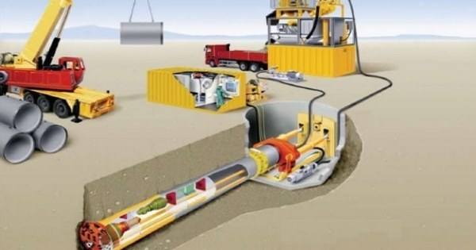

Nigeria: Trenchless technology to curb floods, gridlocks
- Admin
- December 28, 2020
Nigerian engineers have called for the adoption of trenchless technology to tackle flooding problems in the country, following the twin menace of flooding and intractable gridlocks in Lagos metropolis.
Engineers are confident that the adoption of trenchless or no dig technology could be the game changer in managing flooding in a sustainable manner, while the use of call system technology coupled with entrenching the political will by relevant stakeholders solve the traffic menace in Lagos, especially in Apapa axis.
Jimoh Tunde, a member of the Nigerian Society of Engineers (NSE) , led the call at a workshop and environmental assessment organized by Apapa Branch of the society to mark the World Engineering day in Lagos. The application of trenchless technology, is suitable for a commercial city like Lagos State with over 20 million dense population and built up areas all over the city.

According to Tunde, the reduction and elimination of flooding in Lagos requires the no dig or trenchless technology due to the built up areas and urban life of Lagos. Tunde stressed that the conventional and traditional method of the use of open drains and canals has failed periodically to curb the menace of flooding in Lagos State as the drains and canals available cannot accommodate the seasonal run off at the peak of the raining season. To curtail flooding, Tunde supports the need for No Dig technology to be adopted in Lagos considering the urban set up and continuous economic and infrastructural expansion in the city.
“Trenchless technology is advantageous because of its minimal disturbance to the populace on their daily logistic plans and movement. Other advantages of the technology, include, no excavation of earth materials during construction process, it is cheaper than the conventional approach with no payment of compensation on the Right of way of the drain, durability as the pipes lined up or sealed with epoxy resins can last up to 50 years,” said Jimoh Tunde.
Lagos Island, Ebute Metta, Victoria Island, Ikeja and Lekki are identified areas where the no dig method can be used for all types of underground drainage pipe work, providing that the pipes measure 75 mm and above in diameter.

Flooding in Lagos city or in any urban area will be and will continue to be a significant problem for many cities across the developed and developing world. This technology would greatly lead to improved living conditions, public infrastructures, safety, environmentally appealing and aesthetically built in features within Apapa,” said the national Vice Chairman, Nigerian Institution of Civil Engineers, Tokunbo Ajanaku.
According to Branch Chairman, Sunny Ejeje said, Branch is utilizing the opportunity provided by the World engineering day, the first of its kind to create awareness about the new technology to minimize the impact of flooding in Lagos state.
In a related development, engineers have also called for improve human capacity development of practitioners in the country. They stated that such improvements will have a positive impact on life, the environment and future generations, as well as things most people use every day from roads, schools, utilities, among others.
According to them, human capacity development would ensure professionalism, quality; keep engineers abreast with latest development in the field, and standard across board and ability to serve the society by providing solutions to fundamental issues affecting the people like the need for affordable housing for the society.
The Chairman of Victoria Island Branch of the Nigerian Society of Engineers, Engr. John Edo Audu led the call at the 2020 engineering week of the association in Lagos. He accentuate that Nigerian engineers should become known for many technological innovations to engender growth and development for Nigeria.
Audu said there should be strategic initiative among critical stakeholders for capacity human development of engineers, to teach them through intensive training that would ensure that they are familiar with quality requirement for engineering products, services and to avoid poor works delivery.
“Engineers are familiar with what quality works look like, the issues of poor and shoddy projects in the society would reduce tremendously. There should be punishment for poor engineering work in the country,” stressed Engr. John Audu
On how to curb building collapse, he said there is the possibility of inserting affordable sensors in different parts of building to monitor movement of key structural elements.
The Chairman, Engineering Week, Omobanle Giwa, an engineer said there is need for more awareness in terms of what engineering is and key roles of practitioners as pioneers of progress in the country. Giwa explained that programmes have been designed to promote catch them young among pupils in both secondary and tertiary levels of education especially for students to study engineering and find solutions to issues.
“Nigerian engineers have come a long way but there is need to improve our creativity, Knowledge and to come to the forefront of development, reach out to all stakeholders on what engineering brings to the society,” said Engr. Omobanle Giwa.
Top News
NNPC begins rehabilitation of broken Lagos gas pipeline
December 28, 2020